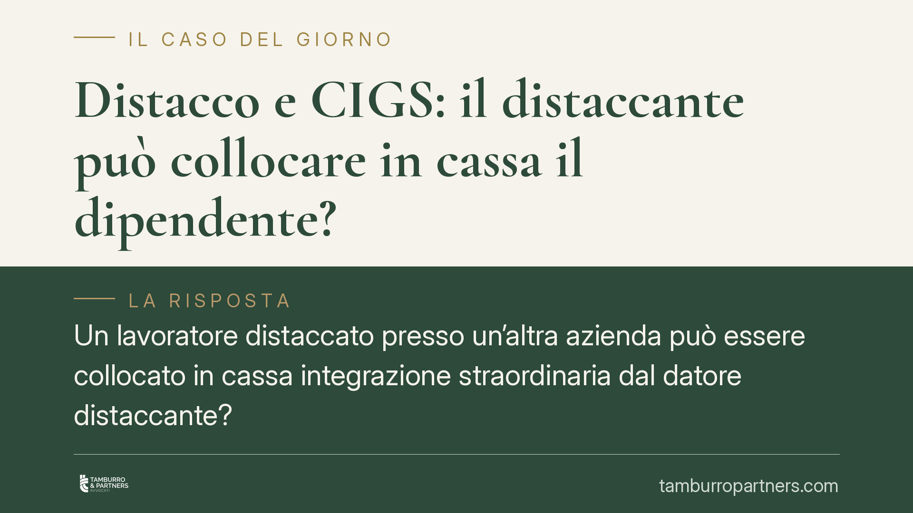

Distacco e CIGS: il distaccante può collocare in cassa il dipendente?
Un lavoratore distaccato presso un'altra azienda può essere collocato in cassa integrazione straordinaria dal datore distaccante? La Corte di Cassazione risponde affermativamente, a precise condizioni: il rapporto deve restare in capo al distaccante e non devono emergere finalità fraudolente. Una pronuncia rilevante per i gruppi d'impresa e le operazioni infragruppo.

Il caso
La questione nasce dal collocamento in cassa integrazione guadagni straordinaria (CIGS) di una lavoratrice distaccata presso un'altra impresa del settore editoriale. L'INPS contestava la legittimità del trattamento, ritenendo incompatibili la posizione di distacco e l'accesso all'ammortizzatore.
La Corte di Cassazione ha invece affermato un principio chiaro: il distacco non impedisce di per sé l'accesso alla CIGS, purché la titolarità del rapporto resti effettivamente in capo all'azienda distaccante.
> Nota sugli estremi. Il riferimento numerico dell'ordinanza riportato dalla fonte giornalistica reca un anno anomalo e non è allo stato verificabile nelle banche dati ufficiali. Per rigore deontologico non pubblichiamo l'estremo esatto fino alla sua conferma: chi intenda richiamare la pronuncia in atti deve verificarne numero, sezione e anno presso le fonti istituzionali.
Inquadramento normativo
Il distacco è disciplinato dall'art. 30 del D.Lgs. 276/2003. Si ha distacco quando un datore di lavoro (distaccante) pone temporaneamente uno o più lavoratori a disposizione di un altro soggetto (distaccatario) per l'esecuzione di una determinata attività, a fronte di un proprio interesse.
Il punto decisivo è che, durante il distacco, il rapporto di lavoro resta in capo al distaccante. È il distaccante a conservare gli obblighi retributivi, contributivi e di gestione del rapporto; il distaccatario esercita soltanto il potere direttivo sull'attività prestata. Questa titolarità formale e sostanziale è il fondamento della pronuncia.
Su questa base, la CIGS – il cui perimetro causale è definito dal D.Lgs. 148/2015 (artt. 21 e seguenti, che individuano le causali di crisi, riorganizzazione e contratto di solidarietà) – può essere attivata dal datore titolare del rapporto, cioè dal distaccante, quando ricorrano i relativi presupposti aziendali.
Le due condizioni poste dalla Corte
La Cassazione subordina la legittimità del collocamento in CIGS a due verifiche:
- Sostanza del rapporto. Il legame giuridico deve restare realmente radicato nel distaccante, non solo sulla carta. Se il distacco mascherasse un trasferimento di fatto del rapporto, verrebbe meno il presupposto.
- Assenza di finalità fraudolente. L'operazione non deve essere costruita per aggirare le regole sugli ammortizzatori sociali o per scaricare indebitamente costi sulla collettività. La verifica è sostanziale e guarda all'effettivo assetto degli interessi.
Quando entrambe le condizioni sono soddisfatte, il lavoratore distaccato può essere collocato in CIGS dal distaccante.
Contribuzione figurativa
Alla sospensione in CIGS si accompagna, in via generale, la copertura figurativa: i periodi di integrazione salariale sono accreditati ai fini pensionistici secondo le regole del D.Lgs. 148/2015. Si tratta di un effetto connesso alla natura dell'ammortizzatore; l'esatta estensione della copertura va però riscontrata caso per caso in relazione alla causale e alla durata del trattamento, poiché la disciplina distingue le diverse ipotesi.
Implicazioni pratiche
Per i gruppi d'impresa e le aziende che utilizzano il distacco, la pronuncia conferma un'apertura importante: la gestione degli esuberi temporanei può passare dallo strumento CIGS anche quando il lavoratore sia distaccato altrove.
L'apertura, però, non è incondizionata. Il baricentro resta la coerenza tra la realtà del rapporto e l'uso dell'ammortizzatore. Un distacco opaco, o funzionale solo a reperire copertura contributiva o reddituale, espone a contestazioni dell'INPS e al rischio di recupero delle prestazioni.
Cosa fare in concreto
- Verificate la permanenza del rapporto in capo al distaccante: documentate retribuzione, versamenti contributivi e potere disciplinare.
- Conservate la prova dell'interesse al distacco richiesto dall'art. 30 D.Lgs. 276/2003: è il presupposto di legittimità dell'intero schema.
- Ancorate la domanda di CIGS a una causale precisa tra quelle del D.Lgs. 148/2015, con documentazione di crisi o riorganizzazione coerente.
- Mappate i rischi di frode: nelle operazioni infragruppo è opportuno un controllo preventivo sulla coerenza tra distacco e presupposti causali della CIGS.
- Riscontrate gli estremi giurisprudenziali prima di citarli in atti: utilizzate solo pronunce verificate nelle fonti ufficiali.
---
Contributo informativo a cura di Tamburro & Partners - Avv. Giuseppe Tamburro. Non costituisce parere legale.
Ogni storia di lavoro ha i suoi tempi.
Se gestisci HR e vuoi un confronto su contenzioso, ispezioni o licenziamenti, scrivi allo studio. Ti rispondiamo entro un giorno lavorativo.